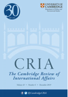

收录于合集

作品简介
【作者】
卡塔里娜·金瓦尔（Catarina Kinnvall）：瑞典隆德大学政治学系教授，她是国际政治心理学学会（ISPP）的前副主席，也是《政治心理学》杂志的现任主编。主要研究领域为全球化与国际关系、政治心理学以及南亚和欧洲的宗教与民族主义。她的著作包括《The Politics of Connectivity and Dispersion》(Routledge 2014)、《Globalization and Religious Nationalism in India: The Search for Ontological Security》(Routledge 2006)。
【 编译】 柯孜凝（复旦大学国际关系与公共事务学院硕士研究生）
【校对】 袁蕙珈
【审核 】 姚寰宇
【排版】 柯晗燕
【来源】 Kinnvall, C. (2019). Populism, ontological insecurity and Hindutva: Modi and the masculinization of Indian politics. Cambridge Review of International Affairs, 1-20.
期刊介绍

《剑桥国际事务评论》（ Cambridge Review of International Affairs ）是一份同行评议的国际关系学术季刊，涉及国际研究、国际法和国际政治经济学领域。它由劳特利奇出版社出版。
根据2015年的期刊引文报告，该期刊的影响因子为0.438，在“政治学”类别的161种期刊中排名第113。
民粹主义、本体论不安全感与印度教民族主义：莫迪与印度政治的男性化
Populism, ontological insecurity and Hindutva: Modi and the masculinization of Indian politics
内容提要
在一个被不安全和民粹主义政治定义的时代，印度在莫迪的领导下以一个本体论安全提供者的形象出现。如果本体论上的安全是关于寻求一个（想象的）安全地带，那么本体论的不安全则是在叙述中缺少了这一空间。基于拉康精神分析学派 **( Lacanian)**的理论，“想象”能够填满并自然化上述空间的缺乏，因此本文关注记忆、地点和构建叙述身份的象征是如何在民粹主义话语中被使用。具体而言，本文试图理解印度本体论不安全感 **( ontological insecurity)**和民粹政治之间的关系。本文讨论了“国族” ( nation hood)、“宗教”和沿着性别边界划分的“印度教男性” (Hindu masculinity) 话语的重塑，为旨在治愈印度社会中本体论不安全感的政治实践创造了基础。本文重点关注莫迪主义 **( Modi Doctrine)**如何塑造和扩展它的外交政策话语至一种提供国内外本体论安全之物，优先考虑本土主义 ( nativism)、民族主义 **( nationalism)**和宗教的民粹主义叙述 ( populist narratives)，同时也探讨了日常实践如何挑战这种叙述并提供了有关印度国家的不同想象。
**
** 正文
本文关注印度本体论不安全和民粹政治假想的关系。从对“国族”和“宗教”的民粹主义叙述的批判性分析以及印度外交政策话语中可以辨认出，这与现代性和防止恐怖主义有关。本文讨论了这种叙述如何变成假想之物，并在莫迪的政治领导下与民族主义和宗教信条交织在一起。 **作者认为，按照性别划分 “国族”以及“宗教”的重新构建为治理实践奠定了基础。在这种实践中，关于宗教和世俗主义的霸权解释变成了旨在“治愈”(healing)印度社会大量本体论不安全感。**因此，这篇文章从印度教民族主义的角度重新思考、重新合理化、重新想象印度国家与印度外交政策以及“国族”和“宗教”的性别叙述如何解释寻求国内和国外的本体论安全中的欲望和破裂。同时，本文也关注如何通过日常实践挑战这种叙述，从而使得关于印度国家的不同想象得以存在。
文章开篇探讨了民粹主义和本体论安全的关系，认为印度是世界范围内显著的心理学和叙述发展典范。之后，作者又讨论了印度外交政策话语的最新进展，特别关注莫迪主义是如何形成和扩展其外交政策话语，并使之成为民粹主义的本土主义、民族主义和宗教的叙述。在这里，作者转向了对这种话语的性别分析。有关性别的话语强调了某种国族和宗教复兴的民粹主义叙述，并通过本土主义和多数主义进行表达，这使得印度形成了一种旨在团结在国内国外印度教徒的焦虑印度教民族主义。最后，作者提出了一些初步想法回答了这种民粹主义性别叙述为何总是破裂和未完成的，以及它们如何导致了对莫迪政权的社会抵制和心理适应力。
一、 民粹主义和本体论不安全感 ****
民粹主义存在几种争议的概念。一些人认为民粹主义是一种意识形态或社会运动(Mudde 2007)，另一些人则认为它是一种特殊的政治风格(Wodak 2015)。与拉丁美洲政治有关的研究认为民粹主义是一种解放力量，是一剂治疗反帝国主义和二十世纪末新自由主义弊病的良药(Laclau 2005)。民粹主义也被认为是一种有关同质和对立群体划分的二元主义，它将人分为“纯粹的人民”和“腐败的精英”，并认为政治应该是对人民意志的表达(Kriesi & Takis 2015; Mudde 2007)。支持拉克劳的人倾向于将民粹主义视作激进民主的重要组成，而那些对民粹主义持消极看法的人则认为其存在分裂潜质，即它可能对不被视为人民的群体的权利视而不见，尤其是少数民族（宗教、种族、性别或其他）以及移民(Rydgren 2012)。通过将社会分为两种对立阵营，民粹主义话语最终构建了“比共同体总数少”但渴望“被认为是唯一合法的整体”的“人民”(Laclau 2005)。 伊格纳兹（2003）提出了目前印度民粹主义的五种特质：民族主义和本土主义、种族主义、仇外主义、民主治理的新模式以及对强国家和强领导人的诉求。这些特质和诉求在危机时期尤为重要，通常会被表达为经济和社会、政治或心理上的焦虑和不安全感。
从本体论安全的角度看民粹主义要考虑到情感和安全感的反应。莱茵认为在疏远的社会关系中，冷漠对本体论社会构成威胁，这使得个人商品化和个性化（RD Laing 1960）。吉登斯将本体论安全和存在性焦虑放在了现代性和全球性的理解之下。他认为，本体论安全是指随着世界的变化而具有“位置感”(sense of place),这种位置能够提供个体传记和场所之间的心理联系作为个体行动时有关时间-空间的设定。
如果本体论安全的目的在于寻求一个（想象的）安全的天堂，那么本体论不安全就是在叙述中缺少这种空间，这种缺乏导致 了对整体性的渴望 。 这个 想象的 “ 对象 ”通常是通过传记叙述 、 记忆 、 位置 和符 号 构建的，而集体情感是 叙述构成和（集体）身份巩固的核心， 比 如对国家的热爱或对陌生人的仇恨，恐惧或厌恶。
民族身份之所以与民粹主义政治相互联系是因为在民粹主义中，政治领袖通常需要引导情感讯息并将之诉诸存在本体论不安全的全体选民，这是一种 “情感统治”( emotional governance) 的手段 (Richard 2013) 。诸如移民或多元文化主义之类的复杂事物常常被简化为摧毁“民族纯粹性”罪魁祸首(culprits)的过程(Pelinka 2013)。在印度，这一过程通常出现在有关多数族裔与少数族裔的关系以及印度教多数派的普遍焦虑的宗教与世俗主义的辩论中。印度的案例阐明了民粹主义者从未与他们特定的文化和民族背景完全脱离，但同样也没有与想象中的事物（例如国家或宗教）脱离。寻找罪魁祸首的核心是“本土主义”意识形态，该思想认为“国家应仅由本土群体（民族）的成员居住，而非本地元素（人和思想）从根本上威胁着民族国家(Mudde 2007)，它将“纯粹”人民及其民族国家的先天权与不应得的其他人（特别是少数群体和移民）区别开来。
民粹主义话语中的本土主义与性别密切相关 。 本土主义往往与“性别话语交织在一起，这种话语基于国家内部对性和生殖的调节，对“我们的”妇女的保护以及对“他者”的性别文化的自卑或妖魔化”(Mulinari&Neergaard 2014)。印度民族主义者对印度穆斯林男子的描述是对印度教妇女的“过度性别化”和“过度男性化”威胁，这就是此类话语的有力例证。
本土主义者和反建制的叙述也倾向于依靠 “背叛者”的 出现，即那些以多元主义为名剥夺或出卖福利国家利益的精英。 这种叙述经常寻求具有超凡魅力的领袖。领袖通过公共集会以及常规和社交媒体与他们保持直接联系，声称他们表达了普通人的“真实”声音(Inglehart 2016)。互联网越来越多地被用来动员和协调联合行动和声音，因为它提供了诱导和维持“集体身份”和“社区意识”的机会(Caiani and Parenti 2009)。
心理学对民粹主义的研究都与不满的投票者的行为态度有关。社会心理学认为，人类需要寻求与他人和群体的联系，感知到的对社会群体的威胁会引发愤怒、疏远或剥夺公民权利的感觉(Belmi and Laurin 2016)。因此， 现有的研究 认为人们转向民粹主义政治的原因是通过参与避免排斥和孤立，以寻求依恋和归属感。
与社会心理学相比，对本体论不安全的研究非常重视民粹主义政治的结构和心理方面。他们认为的“他们的”文化、宗教、传统，或者说是“他们的”民族通常与多种恐惧和不满有关。因此，除了对民粹主义的社会心理学理解之外，还必须考虑与特定情境相关的因素，例如社会政治传统、政党政治历史、文化霸权倾向、媒体格局和外交政策以及社会主义因素、经济发展和全球化的跨国影响。 我们 应 该 关注 于结构性和心理上的焦虑或者本体论上的不安全感，以 建立 一个更全面的框架理解民粹主义政治的吸引力。以印度为例，这 提出了有关国内外政权建设、政 权建设如何与民族主义 、 带有性别特征的民族叙述和宗教复兴联系在一起 的问题 。
二、 民粹主义和印度外交政策话语 ****
随着莫迪的上台，印度教的民族身份作为对领导人和整个民族经历的本体论不安全感的回应得到了加强。这种印度教民族主义 **( Hindu Nationalism)并不是随着莫迪的当选而出现的，最早可追溯到萨瓦尔卡（1923）和戈尔沃瓦尔（1939）对印度教运动 (Hindutva) 的政治动员的作品中（注：“ Hindutva”是指将印度教徒政治化以将印度国家转变为印度教国家，是一种印度教民族主义运动）。戈尔沃瓦尔(Golwalkar)在《我们或我们的国家定义》( ** We, or our nationhood defined )一书中强调出生和种族，主张“人民的本质在于其文明”，认为穆斯林少数民族是威胁印度教社会中的“外国人”。尽管印度教民族主义根植于印度社会，但直到1990年代初，摧毁巴布尔清真寺等事件的发生才使印度教民族主义成为政治力量。1991年印度遭遇经济危机后，中产阶级陷入了以生活方式西化和加深宗教信仰来应对经济和生活中的不安全感。在全球力量和政策自由化方面，本体论不安全已逐渐成为印度政治格局的主导因素。不过作者认为，在以莫迪为首的印人党的领导下，这些不安全因素已越来越多地指向保留着想象的过去，在这种想象中存在着威胁印度教民族和宗教的对象。
在此需要关注莫迪是如何转向更积极主动的外交政策的。这种转变是“莫迪主义”的一部分，包括了印度优先、邻里优先、克服历史上的犹豫、从统治者到制定者、印度侨民、加强文化纽带等内容(Chaturvedi 2017)。这涉及到了一种使用软实力的政策方法，诸如国际瑜伽日或“印度制造”强调国家的文化和遗产、强调文化联系进行动员以及对祖国的物质和情感投资。通过对文化和遗产的强调可以将印度教民族主义定义为印度民族主义。“印度的责任和与生俱来的和平”取决于统一的（印度）民族主义身份的观念。但是，次国家和族群对强大、完整和全面的民族国家观念的挑战不断阻碍这种身份的形成（Kinnvall&Svensson 2018）。在加强民族认同的霸权解读中，本体论安全成为对危机的一种自我肯定解释，因而完整的印度教将治愈目前的不安全感。 因此， 印度外交政策选择背后的一个主要主张是，印度教 范围 与印度领土 重合 ，对印度教民族 的 完整的内外威胁都是对印度教 整体 的冒犯。
莫迪与许多 其他 民粹主义领袖 一样拥有将 本土主义的叙述与宗教话语相结合的能力 。通过 情感 、 **图像和符号而不是理性的论据或准确的历史，向他的追随者提供 “使印度再次强大的愿景”，从而激发人们的兴趣。**在民粹主义话语中，宗教和民族主义的结合为有关存在本身、外部世界和人类生活、他人的存在以及自我身份实际上是（或被认为是）什么的问题提供了答案。因此，宗教及宗教复兴为不宽容不认同这些信念的人的提供了基础。“他者”成为封闭宗教和民族主义边界的基础部分以及民粹主义话语的基础。但是莫迪与其他民粹主义领导人的相似之处不只如此。莫迪对新闻界的反感、通过Twitter和Mani Ki Baat（注：直译为“心脏谈话”，由莫迪主持的印度广播节目）与大众的直接交流等与极右翼民粹主义相符。
印度教徒认为的民主的必要条件在于印度教徒在世俗主义过程中占多数。 印人党、国民志愿团 ( RSS) 、印度教大会 (VHP) 和同盟家族 ( S angh Parivar) 将世俗主义视为一种关怀少数民族（穆斯林）的绥靖政策。印度教民族主义依靠“纯粹”民族及其对民族国家的先天继承权以印度教运动的方式向政治施加影响力。将多数人作为受害者成为一种普遍的民粹主义策略，其目的是将“威权主义和任何威胁“人民”同质性的人的非法袭击合法化(Mudde and Kaltwasser 2017)。从本体论安全的角度来看，这种策略是Chernobrov所说的公众对危机的应急反应，以自恋的民粹主义叙述构建一个安全的“自我”（一个想象中的本体论安全容器）。
三、 性别化的国家身份叙述
民粹主义也是性别化的印度教民族想象发挥作用的地方。阿南德（2011）将印度教民族主义描述为精神分裂症的民族主义 (schizophrenic nationalism )。它将想象的政治、本体论不安全感、文化转型和社会动员结合在一起，以产生暴力和恐惧，但它同时也使得宽容的印度教徒神话不受挑战。班纳吉（2012）称印度教徒为“刚强的民族主义” ( muscular nationalism)，强调男子气概 **( manhood)**并不仅是在与他者的柔弱对照中被赋予，更是在一种对于惧怕强敌拒绝印度教政治的存在和主导中显现。在这种思想下，需要一位更具进取心和严于律己的印度教男性能够坚定地应对其他宗教人士的危险，以使印度成为一个真正的印度教国家。这类似于作者对兴都瓦分析中的焦虑的民族主义 **(anxious nationalism )**概念。这种焦虑的民族主义的根源在于无法消除矛盾情绪，并试图通过将其他人变成存在的威胁来治愈不安。只有通过增强对纯粹自我和非纯粹的他者的想象才能建立（想象的）本体论安全（Kinnvall 2006）。 因此，焦虑的民族主义引发了一种旨在对未知事物进行威慑或监视的安全措施。 控制、安全或其他治理机制将这些普遍的焦虑感转化为特定的威胁，例如移民、激进化、反恐战争、紧缩和环境（Eklundh et al 2017）。在印度，这种威胁一直来自于想象中的国内外穆斯林社会的弊端。
印度教民族主义 运动的民粹主义话语表明，它不仅吸引那些因经济和政治格局变化而失败的人，也吸引那些担心失去其（男性）特权的人。 自1947年以来，针对少数族裔和低种姓妇女的性暴力已越来越多地用于巩固跨种姓的印度教同盟，并且在2002年的古吉拉特邦大屠杀中，由占支配地位印度教领导，妇女遭到团伙谋杀。在这些侵犯背后是印度教民族主义关于“民族作为女神的母亲”的叙述。这一概念在牛和女性中逐渐形成，并以身体（本质主义）的形式强化了国家的观念。母牛指的是家庭和民族，而对她的保护指的是父权制和印度教国家。在这种宗教话语的逻辑内，对牛和印度教妇女的保护变成了一个“纯粹的”印度教民族国家的象征，与想象中的他者——穆斯林对立。这是宗教复兴的最主要体现，既涉及到近邻穆斯林国家的外部威胁，又是涉及到来自狂热的穆斯林的内部威胁。然而，宗教复兴的话语也是对印度教徒的性别民粹主义刺激，提醒了印度教有关他们的财产、妇女和生存与穆斯林对无辜印度教徒发动的暴力战争息息相关。也就是说这呼吁着唤醒印度教徒的思想、身体和身体政治，而被唤醒的男性国家被视为对女性土地的保护(Anand 2011)，以恢复想象中的本体论安全。
莫迪被描述为 “新印度”的创立者 ， 一个进步 的、发展的 和反腐败的市场导向 制定 政策的人， 他 为能够在全球和本 土 确立 自身 地位的男性国家 ( masculine state ) 提供了凝聚力的民粹主义叙述。 他将自己描述为拥有“谦卑的血统”的“普通人”。他对讲英语的印度精英表示不满，以此重申对印度教的自豪感，回应西方的统治和上流社会的反感(Kinnvall&Svensson 2019)。与其他民粹主义领导人类似，莫迪需要证明他的非凡才能。因此，围绕莫迪竞选活动的民粹主义话语着重于体现他高效、动态、有力的男子气概，能够克服曼莫汉·辛格等前任领导所倡导的“柔弱”的领导风格。
因此，焦虑的民族主义与精神分裂症和 刚强的 民族主义一样，希望将民族主义与已构造的印度教宗教融合在一起， 其中包括 光荣的过去 、 领土丧失 及 与压迫者的斗争的故事，以 提示 失去的帝国。这种 有关 前殖民 时代 的 郁结 提醒世世代代 的印度人民过 去的不公和创伤需要克服。 现任民 粹主义政府在重新定义国际舞台上的男子气概国家并重建本体论安全感方面的 新方式 ，这种试图朝着理想方向改变公众叙述的尝试显而易见。
**
**
四、 反抗的性别叙述 ****
宗教和民族主义在提供这些本体论安全的民粹主义文化叙述中处于特别有利的地位。然而，妇女和其他团体也在抗议她们作为集体的负面代表，迫使国家承认在描绘的和谐世界之外存在许多冲突场所(Desai 2016; Sunder Rajan 1993)。 如前所述，全球化 、 现代性和新自由主义政策的进程往往会破坏以前的统治结构。在许多情况下， 由于 妇女和少数民族的抵抗 ， 这种变化导致宗教和文化传统受到挑战并发生重大变化 。
因此，必须以自下而上的方式看待对民粹主义性别叙述的抵抗，从而允许主观化和重新采用可以抵抗和颠覆民粹主义霸权优势的替代叙述。要认识到民族国家想象的非完整性，这是由特定的权力决定的。用齐泽克的话说，我们开启了政治时刻，这使竞争的政治力量之间的外部对抗和标志着这些力量的内部分裂都开启了（Zizek 1989）。唯有如此，才能质疑以性别、暴力和教条主义的形式不断复制的主权机构的民粹主义实践。
印度为本体论（不安全）的研究增添了重要的视角。它指出了任何寻求安全的努力的破碎性和虚构性。尽管莫迪和印度教民族主义者试图用想象的过去和特定的罪魁祸首来命名和描绘，但是本体论的安全性从来不是我们所能拥有的。相反，必须将其视为对封闭、整体性的一种（不可能的）渴望，以及拉康所说的快乐（享受），这是永远无法完全实现的。 将本体论安全 的构建 视为 未竟之事 的观点 也可容许 其他想象或其他有 关 过去 、 现在和未来 的远见 出现替代性叙述。
_ ** _ ** _ ** _ 本文由国政学人独家编译推荐，文章观点不代表本平台观点，转载请联系授权。**__
扫下方二维码查看往期精彩
【新刊速递】第01期 | Review of International Studies Vol.45, No.4, 2019
【新刊速递】第02期 | International Relations Vol.33, No.3, 2019
【新刊速递】第03期 | International Organization Vol.73, No.3, 2019
【新刊速递】第04期 | World Politics, Vol.71, No.4, 2019
【新刊速递】第05期 | European Journal of International Relations
【新刊速递】第06期 | Security Studies, Vol.28, No.4, 2019
【新刊速递】第07期 | International Secur.ity, Vol 44, No. 2, 2019 | 国政学人
【新刊速递】第08期 | Cambridge Review of International Affairs,Vol.32,No.4
【新刊速递】第09期 | International Relations of Asia-Pacific Vol.19,No.3
【新刊速递】第10期 | International Studies Review, Volume.21, No.3, 2019
【新刊速递】第11期 |Cooperation and Conflict, Vol. 54, No. 4, 2019
分类导览 1
分类导览 2

点“在看”给我一朵小黄花